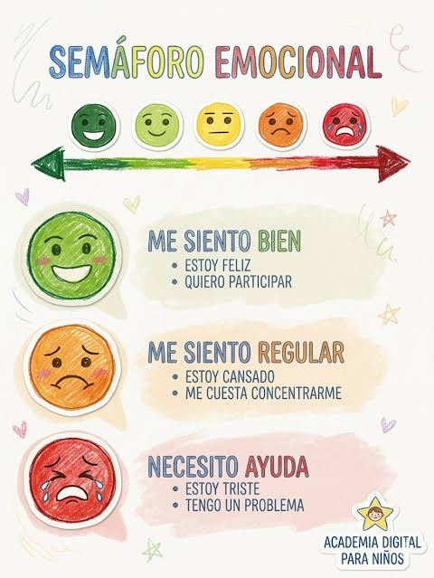
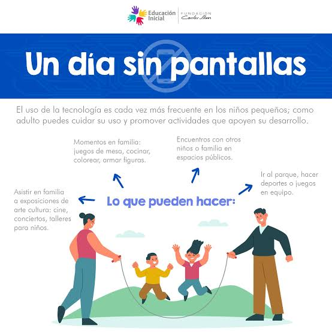

Utilizar el semáforo emocional tras diez minutos en redes sociales o videojuegos permite identificar el impacto del contenido: el verde indica calma o inspiración, el amarillo refleja ansiedad o comparación, y el rojo señala enojo o agotamiento mental. Esta herramienta facilita detectar a tiempo cuándo es necesario cambiar de contenido, silenciar cuentas o desconectarse para recuperar el bienestar.

Evitar el celular durante los primeros 30 minutos al despertar y los últimos 30 minutos antes de dormir protege la calma mental, mejora la calidad del descanso y ayuda a comenzar el día con mayor enfoque. Este hábito reduce la sobreestimulación temprana y permite que la mente se desconecte de la presión digital para lograr un sueño verdaderamente reparador.
Al reunirte con amigos o familia, dejar todos los teléfonos en un mismo lugar permite convivir sin distracciones, fortalece los vínculos reales y fomenta conversaciones más profundas y presentes. Este sencillo acuerdo colectivo elimina las interrupciones constantes de las notificaciones, demuestra interés genuino por quienes te acompañan y ayuda a desconectarte por un rato de la presión digital para disfrutar plenamente del momento compartido.